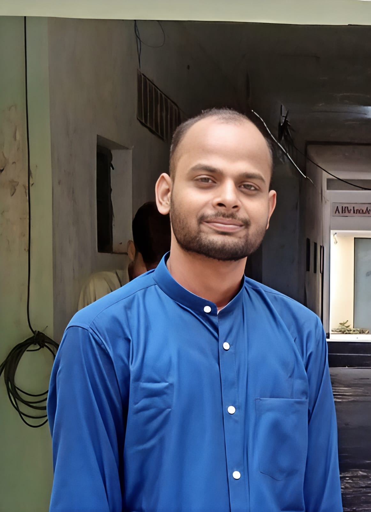
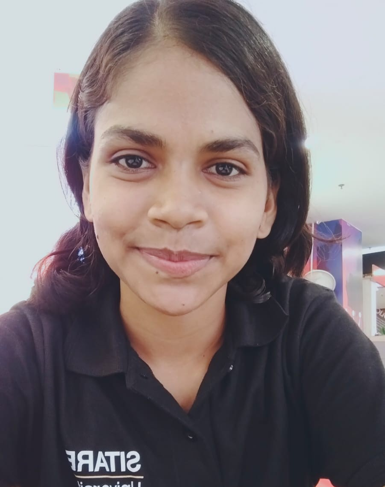

THE PEOPLE BEHIND ACADEMICMATCH
Building a better bridge between talent and opportunity.
AcademicMatch is being built by a team that believes every student deserves a fair chance to discover opportunities, showcase their potential and connect with the right people.
Meet the people turning this idea into reality.
OUR FOUNDER
The idea behind the journey

FOUNDER & CEO
Saurabh Verma
Founder & CEO · AcademicMatch
A student from a lower-middle-income background, Saurabh has always been curious about learning new technologies and exploring how they can be used to solve real-world problems.
He believes that every problem comes with a solution and that, as human beings, we should never stop exploring them. He believes that we should never stop ourselves from doing something better or bigger simply because society thinks we are not capable of it.
His philosophy is simple: keep learning, keep improving, and keep doing the right things even when the journey is difficult.
Never stop yourself from doing something better or bigger just because society thinks you are not capable of it. Grind yourself. Keep exploring. Do the rightful things.
THE TEAM
Meet the people building it
Different skills. One shared vision.
Sakshi Nagar
Founding Team Member
Part of the founding team behind AcademicMatch, contributing to the original idea and helping turn the vision into a working platform.
Aditya
Founding Team Member
Working on the backend architecture of AcademicMatch and helping build the technical foundation of the platform.
Parth Gupta
Founding Team Member
Focused on maintaining website security, protecting the platform and managing the project's databases.

Vikas Mewara
Founding Team Member
Working on maintaining and improving the frontend of AcademicMatch to create a smooth and accessible user experience.

Vivek Yadav
Founding Team Member
Responsible for maintaining coordination across the team and helping everyone work together towards the shared vision.
Filling the gap between students and companies.
We strongly believe that after years of learning, struggling and building themselves, a deserving student should not have to keep running from one website to another, searching for opportunities and applying to countless companies.
AcademicMatch was started with the vision of bringing students and companies together on one platform, allowing both sides to discover each other more directly and meaningfully.
Students should be able to showcase who they are, what they have learned and what they can contribute. Companies should be able to discover the right talent based on genuine skills and potential.
Instead of making opportunity discovery unnecessarily complicated, we want to create a place where the right opportunity can reach the right person.
OUR MISSION
Make opportunity discovery more transparent.
We want to create an ecosystem where students can confidently showcase their abilities and companies can discover emerging talent based on genuine potential.
JOIN THE JOURNEY
Your opportunity starts with your profile.
Create your academic profile and become part of the AcademicMatch journey.